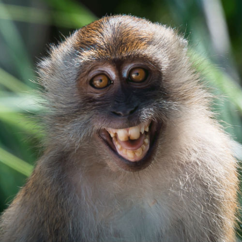
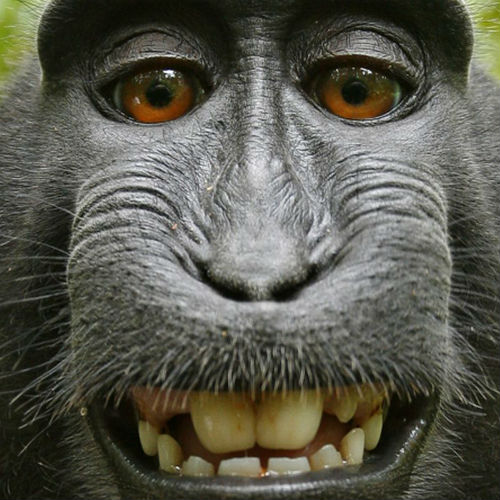
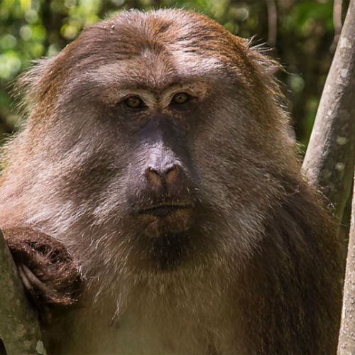

|  |
Bob, the Vervet MonkeyThe Vervet Monkey is an Old World classification. There are 5 known subspecies that have been identified. They have a very unique appearance to them which helps them to be separated from other types of Monkeys found in the world. |
|  |
Larry, the Howler MonkeyThe Howler Monkey is a large type of New World Monkey. There name comes from the fact that they are louder than any other types of Monkeys. |
|  |
Jerry, the Rhesus MacaqueThe Rhesus Macaque is also known as the Rhesus Monkey. It belongs to the Old World category and is among the best known. These are small Monkeys with pink faces that don’t have any fur on them. |